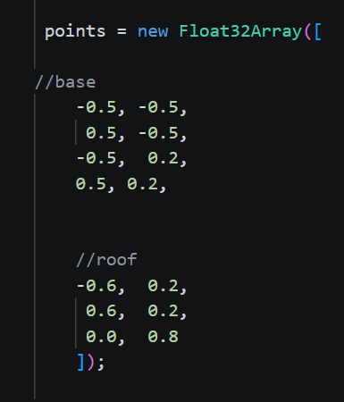
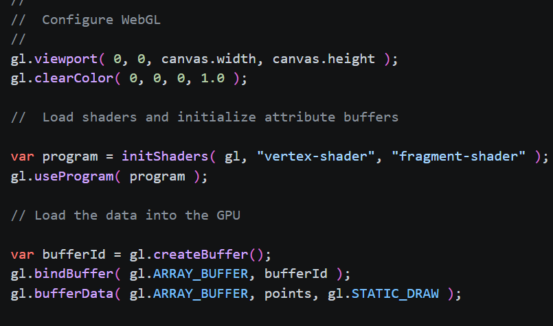
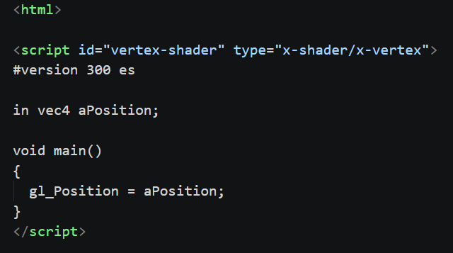
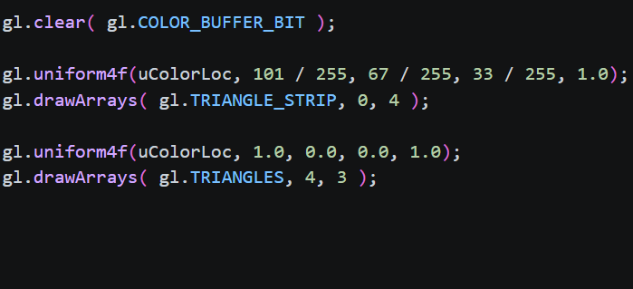
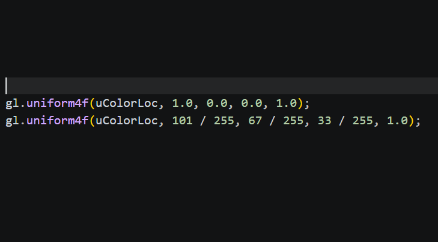
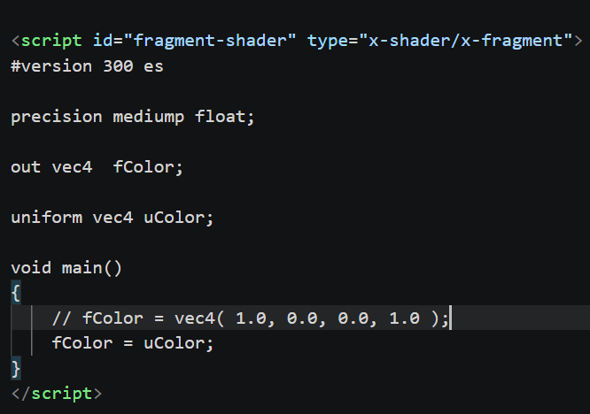

A demonstration of the graphics pipeline on a simple 2D render
The graphics pipeline is a sequence of steps that transforms 3D models into 2D images that can be displayed or rendering 2D shapes that can be dispalyed on a canvas It consists of several stages, including vertex creation, vertex shader, rasterization, fragment shader, and displaying the render. Each stage performs specific tasks to process the data and produce the final image.

Creating the a list of vertices called points, which define the base and roof of the house. Each entry in this list represents a location on the canvas in (x, y) coordinates, where the vertices are positioned. What helped me determine the coordinates of the vertices was imagining the canvas is like a typical 1 by 1 coordinate plane.



This stage involves processing the vertex data using a vertex shader, which is a function that runs on the GPU. The image on the left shows the creation of a vertex buffer which basically stores the vertex data in the GPU's memory, and also loading the vertex and fragment shader. The middle image shows the vertex shader code, which takes the vertex positions and process them each individually. The right image shows how the vertices are connected to create the triangles. Triangles are very important to graphics rendering since triangles are the simplest polygon that can be used to create complex shapes.


Rasterization is the process of converting the triangles into fragments which represent pixels on the canvas. Rasterization is done automatically by the GPU, so there doesn't need to be any code for it, however it is still a crucial step in the graphics pipeline. The image on the left shows the color value being passed into the fragment shader, and the image on the right shows the fragment shader code, which takes the color value and applies it to each fragment.
The final step of the graphics pipeline would be displaying the render on to the canvas. This is done after fragment shading is done. The GPU produces the final fragment colors and writes them to the framebuffer, which is directly linked to the canvas. The final image is a render of the house, which has a red roof and a brown base. This is step is also done automatically by the GPU, and is the step that is exactly the same across all renders.
This house render is similar to the other renders because it follows the same step by step process of the graphics pipeline: Vertex Creation > Vertex Shader > Rasterization > Fragment Shader > Display on Canvas. Just like the other renders, this house render also uses the same vertex shader and fragment shader, but with different vertex data and no mathematical equation. Like the other renders, rasterization is done through the GPU, and the final render is displayed on the canvas.